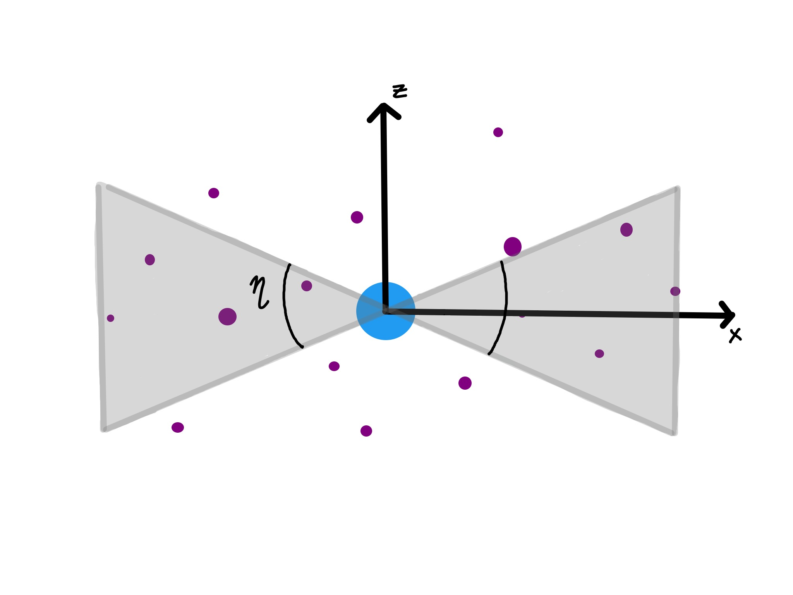

My name is Jenna Samuel. I am a Ph.D. candidate in astrophysics at the
University of California, Davis. My research focuses on using cosmological
simulations to understand how the dynamics of satellite dwarf galaxies
impact their formation history. I am particularly interested in understanding
the satellites of our own galaxy, the Milky Way, and those of our neighboring
galaxy, Andromeda.
I use simulations of galaxies to understand our own galaxy, the Milky Way.
The particular simulations that I use (the Latte simulations) are part of
the FIRE (Feedback In Realistic Environments) project, which is a suite of
fully cosmological hydrodynamic zoom-in simulations. These simulations start
out at high redshift (early times) with only low resolution dark matter
particles which are perturbed according to Cosmic Microwave Background
constraints. The simulation is evolved to redshift 0 (today), at which point
a Milky Way-like dark matter halo is chosen for re-simulation at higher
resolution (“zoom-in” simulation) with dark matter, star particles, and
hydrodynamical gas particles.
I have recently submitted a paper, A profile in FIRE,
that explores the radial distribution of satellite galaxies around both isolated
Milky Way-like galaxies and paired Local Group-like systems in cosmological
simulations. Radial distributions are important because they allow us to test our
models of galaxy formation against observations in our cosmological neighborhood.
The radial concentration, or how clustered satellites are towards their host galaxy,
is also important in studies of spatial and kinematic coherence of satellites, such
as the satellite plane problem.

My current work is aimed at investigating the problem of satellite planes
in simulations. The satellite plane problem is the apparent spatial and kinematic
coherence of the Milky Way’s satellites in a rotating plane or disk structure.
Previous studies that have looked for such planes in simulations have largely come
up empty handed, implying that maybe what we observe around the Milky Way is
exceedingly rare. My work on the subject seeks to disentangle the prevalence of a
planar structure from other biasing characteristics of the satellite distribution
such as radial concentration.
In the future, I will be working on a project that ties the dynamics of satellites
to their formation history. Specifically, I want to disentangle the roles of internal
stellar feedback (supernovae, stellar winds, and photoionization pressure and heating)
and external halo environment (hot, pressure-supported gas in the Milky Way’s halo
exerting ram pressure stripping) in regulating the gas content and star formation of
satellites.
In the past I have done research on accreting supermassive black holes at the centers
of galaxies, called active galactic nuclei (AGN). For this research I used the
technique of reverberation mapping (RM), measuring the time lag in variability coming
from an AGN at different wavelengths/energies. In particular, I used broad line RM where
the time lag was measured between V band continuum luminosity and H-beta broad line
emission. As an undergraduate, my first research experience was at Thomas Jefferson
National Laboratory through the Science Undergraduate Laboratory Internship (SULI)
program. I worked to characterize the properties of multi-anode photomultiplier tubes
that were to be used in a ring-imaging Cherenkov detector.
Outreach & Teaching
Since late 2017 I have been a member of the UC Davis Diversity and
Inclusion in Physics (DIP) group. We meet weekly to discuss issues of equity
within our department and brainstorm ideas to remedy them that we then
communicate to our faculty. You can find diversity, equity, and inclusion
resources on our website, Davis DIP.
Once a month I help put on a local public astronomy event called
Astronomy on Tap at Sudwerk Brewery in Davis. It features two short
talks by astronomers and short segments about current events in astronomy.
The event always draws a crowd of all ages and gives me a chance to
answer people’s questions and let them know what goes on in their
local physics and astronomy department.
In 2018, I organized a graduate student study group that strove to
further a broad scientific understanding of astronomy while providing
necessary professional development experiences like presentations,
CV writing, and website building.
Our biweekly meetings were peer-led and helped us learn about
each other’s research in detail, discuss review articles, or peer review
fellowship application materials.
As a graduate student I have been a Teaching Assistant for introductory
physics labs (both mechanics and electromagnetism). I have also acted as
Course TA for lectures in introductory astronomy, physics for non-science
majors, and upper division math methods for physics majors. All of these
roles included time spent grading and giving feedback to students, as well
as leading office hours and lab sections.
As an undergraduate at Florida International University I participated in
the Learning Assistant program. This was my first teaching experience and
I helped facilitate introductory physics (mechanics) labs for two years
before moving on to helping run the modern physics labs and lecture. There
I helped students run and understand some of the most pivotal physics
experiments of the 20th century, from demonstrating the photoelectric effect
to the double-slit experiment.